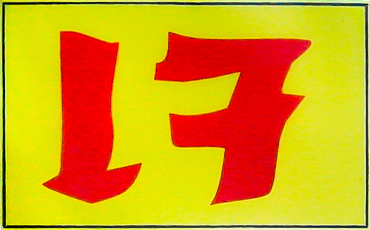
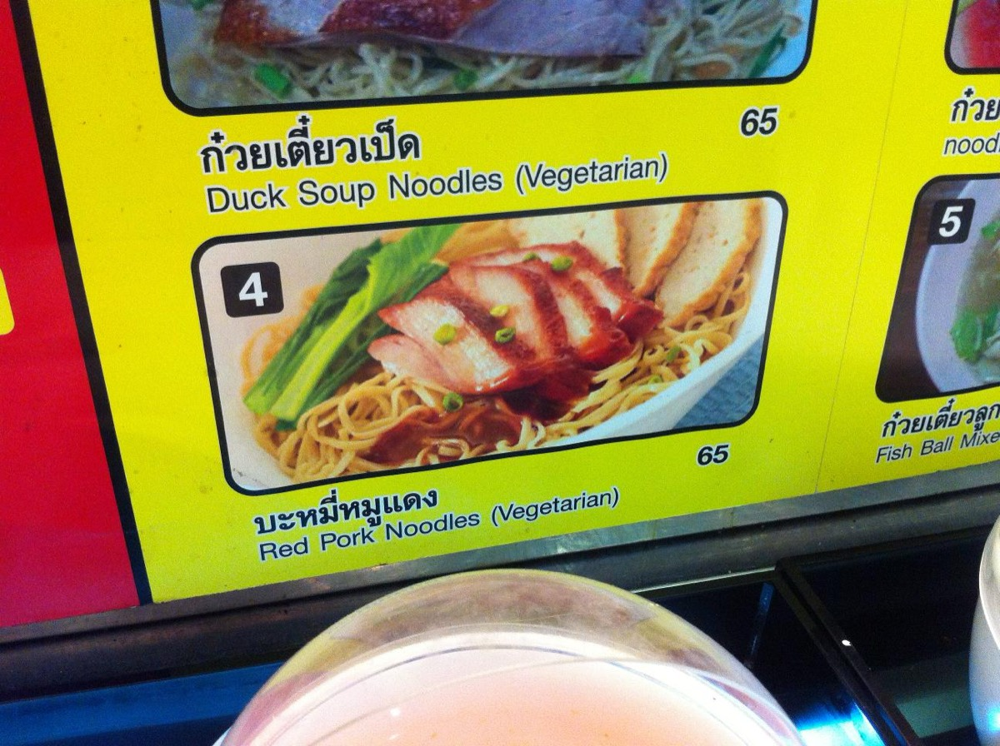
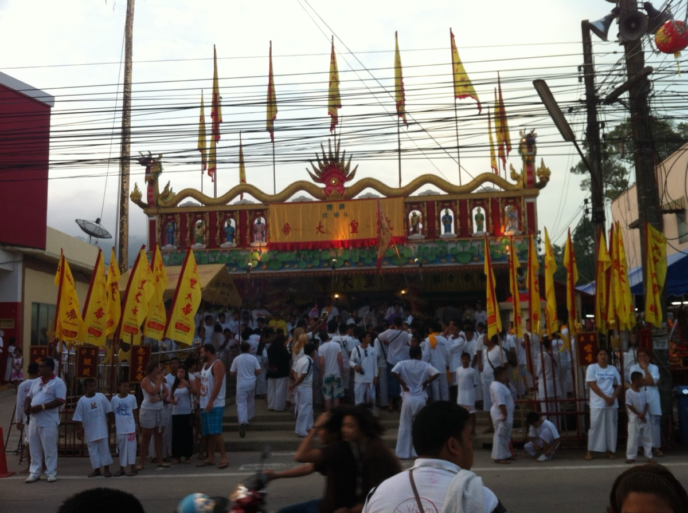
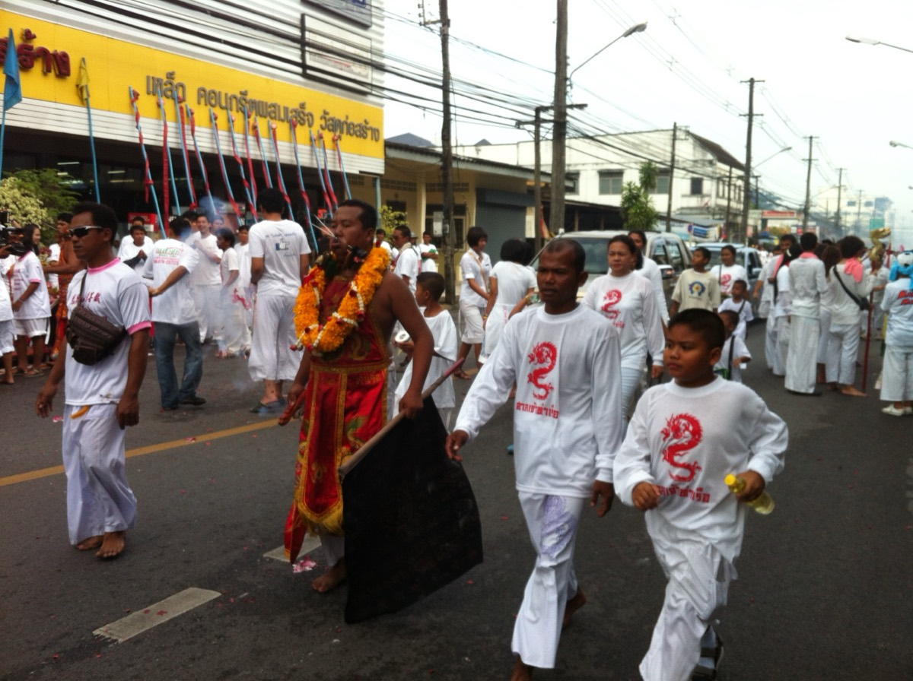
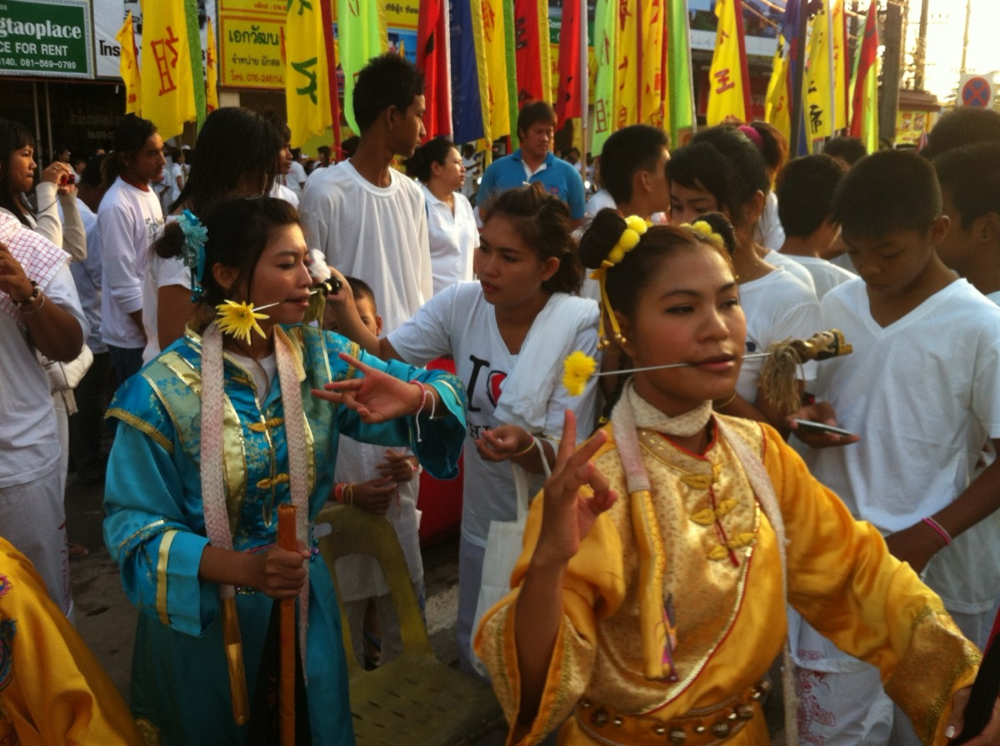
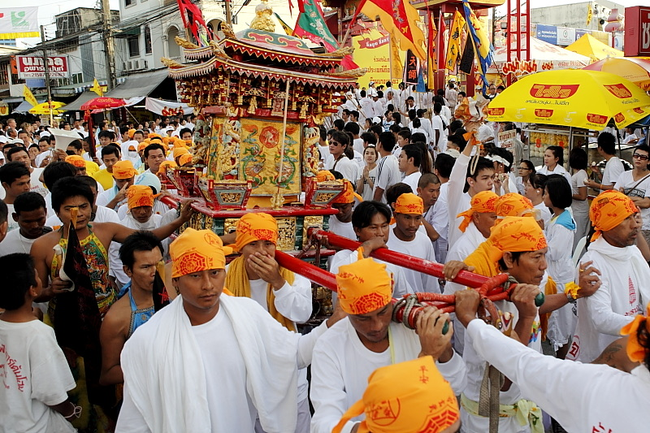
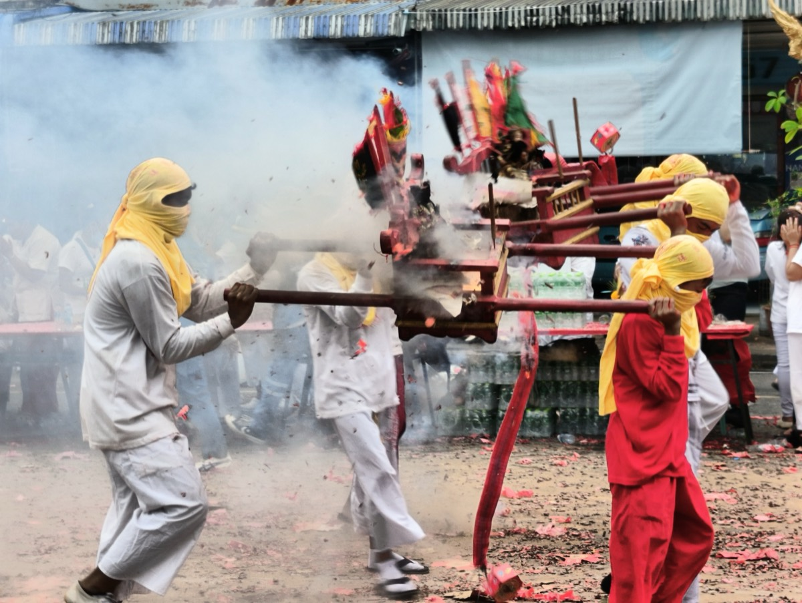

เทศกาลกินเจ · ทั่วไทย
齋กินเจ
เก้าวัน ธงเหลืองเหนือกระทะ งดกระเทียม ใส่ชุดขาว
แตะถนน
10–18 ต.ค. 2569 · 齋 · เจ
motdang.net/sites/kin-jay
เก้าวัน มีอะไร ที่ไหน
แตะตะเกียง แผนที่ปักธงว่าที่ไหน ภาพบอกว่ามีอะไร
อ่านธงเจ 齋 · เจ
ธงเหลืองบอกคนทั้งถนนว่าอาหารร้านนี้ไม่มีของจากสัตว์ ป้ายจีนเขียน 齋 ป้ายไทยเขียน เจ





แตะเพื่อดูอีกครั้ง
เจหรือไม่เจ ลองผัด
งดเนื้อสัตว์ ปลา ไข่ นม น้ำผึ้ง น้ำปลา ซอสหอยนางรม และงดผักฉุนห้าอย่าง ซึ่งเป็นเส้นแบ่งระหว่างเจกับมังสวิรัติ
แตะวัตถุดิบใส่กระทะ


กินเจที่เชียงใหม่ เชียงราย
แตะจุด ทุกที่เปิดดูในมดแดงได้
พระสงฆ์จีนจากวัดหมื่นพุทธเมตตาคุณาราม แม่จัน นำสวด ใส่ชุดขาวเข้าพิธี โทร 053-235-968
ที่มาอาหารเจ J Market กว่ายี่สิบแบรนด์ และเวิร์กช็อป
ที่มาแจกอาหารเจฟรี 11.00–12.00 และ 16.00–17.00 น. ปี 2569 ยังไม่เห็นประกาศ ณ 7 ต.ค.
ที่มาธงเหลืองขึ้นทั่วตลาด แผงเจแผงหนึ่งทำกับข้าวราวยี่สิบอย่างต่อวัน กล่องละ 35–40 บาท
ที่มาโรงทานเจ 11.30–14.00 น. ข้าว ผัดวุ้นเส้น ต้มเต้าหู้ แกงฟักทอง น้ำขิง น้ำเต้าหู้
ที่มาเปิด 07.00–15.00 น. ตลอดเทศกาล ข้าวจานละ 30, 40, 45 บาท
ที่มาหาศาลเจ้า หาร้านเจ
ศาลเจ้า โรงเจร้านเจ ร้านมังสวิรัติตลาด ห้าง คุรุดวารา เทวสถาน
เชียงใหม่: ศาลเจ้าและโรงเจ
- มูลนิธิกวนอิมธรรมทาน 觀音堂 Guan Im Dhamma Dan Foundation (Kuan Im Tueng)โรงเจมหายาน ถนนเมืองสมุทร ประกาศงานถือศีลกินเจ 9–18 ต.ค. 2569 พระสงฆ์จีนจากวัดหมื่นพุทธเมตตาคุณาราม เชียงราย นำสวด ขอให้ใส่ชุดขาวเข้าพิธี โทร 053-235-968 (เชียงใหม่นิวส์ 25 ก.ย. 2569)
- ศาลเจ้าปุงเถ่ากง 清邁老本頭古廟 Pung Tao Kong Shrineศาลเจ้าจีนเก่าแก่ที่สุดของเชียงใหม่ ริมน้ำปิงย่านกาดหลวง ปี 2568 แจกอาหารเจฟรีครบเก้าวัน 11.00–12.00 และ 16.00–17.00 น. ปี 2569 ยังไม่เห็นประกาศ
- โรงเจเทียนฮกตึ๊ง 天福堂 Thian Hok Tueng jay hallสมาคมพุทธภาวนาบุญสถาน ถนนเมืองสมุทร หนึ่งในโรงเจสี่แห่งของอำเภอเมืองเชียงใหม่ที่นับไว้ในงานวิจัยปี 2566
- ศาลเจ้าไต่ฮงกง มูลนิธิเชียงใหม่สามัคคีการกุศล 清邁修德善堂 Tai Hong Kong Shrine, Chiang Mai Samakkhi Charity Foundationตั้งปี 2500 ถนนลอยเคราะห์ ช้างคลาน มูลนิธิบริจาคโลงศพ
- ศาลเจ้าแม่ทับทิม 水尾聖娘廟 Mae Thap Thim Shrineศาลเจ้าแม่ทับทิม ช้างคลาน ริมน้ำปิง
- ตำหนักพระแม่กวนอิม เชียงใหม่ Kuan Imm Palaceศาลพระแม่กวนอิม ใต้เมืองเก่า
- โรงเจ ศาลเจ้าแม่กวนซีอิม Rongche San Chao Mae Kwon C Imโรงเจและศาลเจ้าแม่กวนอิม อำเภอหางดง
- ศาลเจ้าแม่ทับทิม (ศาลเจ้าแม่) Mae Thapthim (san Chao Mae) Shrineศาลเจ้าแม่ทับทิม หนองหาร สันทราย
- สถานธรรม ห้วยเหยินฝอถัง Sathantham Huai Yoenfo Thangสถานธรรม บ้านห้วยเหยิน อำเภอฝาง
- ศาลเจ้าแม่กวนอิมพระราชทาน Mae Kwon Im Phra Ratcha Than Shrineศาลเจ้าแม่กวนอิม อำเภอฝาง
- สถานธรรมพระโพธิสัตว์เจ้าแม่กวนอิม วัดป่าไม้แดง-พระเจ้าพรหมมหาราช Sathantham Phra Phothisat Chaomae Kwon Im Wat Pa Mai Daeng-phra Chao Pharama Maharatสถานธรรมพระโพธิสัตว์เจ้าแม่กวนอิม บ้านปง อำเภอไชยปราการ
เชียงใหม่: ที่อื่น
- ตลาดวโรรส Warorot Marketตลาดวโรรส ปี 2568 ธงเหลืองขึ้นทั่วตลาด แผงเจทำกับข้าวราว 20 อย่างต่อวัน กล่องละ 35–40 บาท
- เซ็นทรัล เฟสติวัล เชียงใหม่ Central Festival Chiang Maiเซ็นทรัล เชียงใหม่ ห้างที่มีชื่อในงาน Thailand J Food Festival 2026 วันที่ 9–18 ต.ค.
- เซ็นทรัลพลาซ่า เชียงใหม่ แอร์พอร์ต Central Plaza Chiang Mai Airportเซ็นทรัล เชียงใหม่ แอร์พอร์ต ห้างที่มีชื่อในงาน Thailand J Food Festival 2026 วันที่ 9–18 ต.ค.
- Namdhari Gurudwara Chiangmaiคุรุดวาราของซิกข์นิกายนามธารี ถนนช้างม่อย
- พิฆเนศวรเทวาลัย Pikanesuan Dewaliเทวสถานพระพิฆเนศ ถนนเจริญประเทศ
- Dev Mandir Chiang Maiเทวสถานฮินดู ถนนรัตนโกสินทร์
เชียงใหม่: ร้านเจ
- ร้านอาหารเจเจ๊เล็ก กาดหลวง J Che Lek Kat Luang Restaurantร้านเจในตลาดวโรรส (กาดหลวง) ถนนข่วงเมรุ
- ร้านอาหารเจ สำเภาทิพพย์ Sampaotip Vegetarian Foodร้านอาหารเจ เปิดทุกวัน 05.00–14.00 น. ตาม OpenStreetMap
- ชมรมมังสวิรัติเชียงใหม่ (ชมร.) Chiang Mai Vegetarian Societyถนนมหิดล เปิดวันจันทร์–ศุกร์ ช่วงเช้าถึงบ่ายสอง ช่วงเทศกาลเลี้ยงฟรีรับบริจาค (Wongnai)
- ผาธรรม ร้านอาหารมังสวิรัติ/เจ Pha Tham Ran Ahan Mangsawirati/Jร้านอาหารมังสวิรัติและเจ 77 ถนนมหิดล
- เจี่ยท้งเฮง Jia Tong Hengอาหารจีนเจ ถนนศรีดอนไชย ช้างคลาน
- แสงวิรุณ Sangwiroonอาหารเจ ก๋วยเตี๋ยว ข้าวราดแกง ถนนหัสดิเสวี
- เอกทิพย์โชคดี Ekathip Chokedeeอาหารเจแบบจีนและไทย ถนนโทรคมนาคม ย่านเจ็ดยอด
- เจ มิ่งขวัญ Ming Kwan Vegetarian Foodข้าวซอยเจ ก๋วยเตี๋ยว ถนนสุเทพ (เชียงใหม่นิวส์ 2567)
- เจไม่จำเจ CMU Veganอาหารเหนือวีแกน 10.00–21.00 น.
- หยกอาหารเจ Yok Vegetarian Restaurantถนนนันทาราม หายยา ข้าวราดแกง ก๋วยเตี๋ยว ข้าวมันไก่เจ
- Je Pa Phon Vegetarian Restaurant170 ถนนเชียงใหม่–ลำพูน เปิด 08.00–17.00 น.
- เจ J Station vegetarian restaurantร้านเจ ถนนมณีนพรัตน์
- Rong Than Jeh Chinese Vegetarian & Templeอาหารเจจีนและศาล ซอย 3 ถนนแก้วนวรัฐ จันทร์–เสาร์ 09.00–18.00 น.
- ร้านเจกวนอิม Che Kuanim Shopร้านเจ ซอย 3 ถนนเกาะกลาง หนองหอย
- Pure Vegan Heavenวีแกน ซอยวัดอุโมงค์ 08.30–18.00 น. ปิดวันพุธ
- Goodsouls Kitchenมังสวิรัติและวีแกน ถนนสิงหราช ซอย 3
- RAD RABBIT VEGAN PIZZERIAพิซซ่าและพาสต้าวีแกน
- May Kaidee's Restaurant & Cooking School (Thai Vegetarian, Vegan Food)ร้านอาหารวีแกนและโรงเรียนสอนทำอาหารวีแกน
- อิ่มสุขอาหารเจ Imsuk Ahancheร้านอาหารเจ ย่านฟ้าฮ่าม
- เจตันบุญ อาหารเจ J Tan Bun Ahancheอาหารเจ ตำบลต้นเปา สันกำแพง
- ร้านอาหารเจสามพี่น้อง J Samphinong Restaurantอาหารเจ หนองหาร สันทราย
- ร้านเจไท่เจิ้ง ช่อแล Ran J Thaichoeng Cholaeร้านเจ ช่อแล แม่แตง
เชียงราย: ศาลเจ้าและโรงเจ
- ศาลเจ้า มูลนิธิสาธารณกุศลสงเคราะห์เชียงราย Chin Munnithi Sathannaprayot Chiang Rai Shrineศาลเจ้าจีนในเมืองเก่าเชียงราย สร้างเสร็จปี 2504 ปี 2567 รับบริจาคของเจให้คนที่ร่วมเทศกาล
- วัดหมื่นพุทธเมตตาคุณาราม Wat Muen Puttha Mettakhunaramวัดพุทธแบบจีน ท่าข้าวเปลือก แม่จัน พระสงฆ์จีนของวัดนำสวดงานกินเจ 2569 ที่มูลนิธิกวนอิมธรรมทาน เชียงใหม่
- สมาคมศาลเจ้าสัว เชียงราย Samakma San Chaosua Chiang Raiศาลเจ้าสัว 天隆庙 แม่สาย
- ศาลเจ้าแม่กวนอิมตำหนักเทพแม่จัน Mae Kwon Im Tamnak Thep Mae Chan Shrineศาลเจ้าแม่กวนอิม บ้านหนองแว่น แม่จัน
- โรงเจ Rongcheโรงเจ อำเภอแม่จัน
- ศาลเจ้าจี้กงหน่ำพิ้งเกาะ Chi Kongnamphing Ko Shrineศาลเจ้าจี้กง อำเภอพาน
- ศาลเจ้าจีน บ้านถ้ำปลา Chinese shrineศาลเจ้าจีน บ้านถ้ำปลา แม่สาย
เชียงราย: ร้านเจ
- บุญสิตา Boonsitaถนนสถานพยาบาล ใกล้โรงพยาบาลเชียงรายประชานุเคราะห์ แกง ผัด ก๋วยเตี๋ยว ข้าวราด ปิดวันเสาร์ (Wongnai)
- ร้านอาหารเจ โอเอซิส Oasis Vegetaurantอาหารเจ เปิดทุกวัน 07.00–19.00 น.
- ปฐมเจ สาขาเชียงราย Phartom vegetarian vegan restaurantเจและวีแกน เปิด 06.30–17.00 น.
- พ.รวินเจ Porwin Vegetarianก๋วยเตี๋ยวน้ำซุปเจ ในเมืองเชียงราย
- คุนดา วีแกน Kunda Veganวีแกน ถนนไตรรัตน์
- ร้านเจ เชียงรายอาหารเจ อาจารย์ Ran J Chiang Rai Ahanche Achanอาหารเจและวีแกนแบบไทย ริมกก (Wongnai)
- ยายหนอม อาหารเจ Yainom Ahancheก๋วยเตี๋ยวเจ สามแยกท่าข้าวเปลือก บ้านเด่น นางแล
- โยตาอาหารเจ Yotaahancheอาหารเจ ถนนไตรรัตน์
- ชีวิตธรรมดา Chivit Thamma Da Cafeร้านริมน้ำกก เมนูมังสวิรัติและวีแกนมีเครื่องหมายไว้ เปิด 08.00–21.00 น.
- Yang Ming Vegetarian Restaurantอาหารเจ แม่ฟ้าหลวง เปิด 08.00–20.00 น.
- ร้านเหมืองแดงอาหารเจ แม่สาย Vegetarianfood MuengDang measaiอาหารเจ บ้านเหมืองแดง แม่สาย
- ร้านอาหารเจเจ เวียงเทิง J J Wiang Thoeng Restaurantอาหารเจ ตำบลเวียง อำเภอเทิง
- อาหารเจป้านาง pa nang J foodอาหารเจ เทศบาลซอย 3 อำเภอพาน 09.00–18.00 น.
เชียงราย: ที่อื่น
- Gurdwara Nanak Sahib Darbarคุรุดวาราของซิกข์ ในเมืองเชียงราย
เวลาเปิดช่วงเทศกาลอาจต่างจากที่ลงไว้
ไปงานกินเจทั่วไทย
คึกคักที่สุดในถิ่นคนไทยเชื้อสายฮกเกี้ยนและแต้จิ๋ว ภูเก็ต ฝั่งอันดามัน ตรัง หาดใหญ่ เยาวราช โคราช

_in_Cherngtalay,_the_Vegetarian_Festival_in_Phuket_07.JPG){kind=link}









ยกเสาโกเต้ง 9 ต.ค. ราว 17.09 น. ขบวนแห่แปดอ๊าม วันละอ๊าม 11–18 ต.ค. ลุยไฟ โก้ยห่าน และส่งพระลงทะเลที่สะพานหินคืนวันที่ 18 ขึ้นทะเบียนมรดกภูมิปัญญาทางวัฒนธรรมของชาติเมื่อปี 2561
ที่มาที่ซุ้มประตูเฉลิมพระเกียรติ อาหารเจสองฝั่งถนน ขบวนเกี้ยวจาก 22 ศาลเจ้าในเยาวราช ปิดถนน 10 ต.ค. 16.00–22.00 น. เปิดงาน
ที่มาปีที่ 20 ที่ลานอนุสาวรีย์ท้าวสุรนารี แห่อิ้วเก้ง 13 ต.ค. ข้ามสะพานสิบสองนักษัตร 15 ต.ค. 19.19 น.
ที่มาร้านอาหารเจกว่า 108 ร้าน ที่สวนหย่อมศุภสารรังสรรค์ แห่รอบเมือง 15 ต.ค. เชิดสิงโตและมังกร 15–16 ต.ค.
ที่มาใครกินเจ
ผู้จัดเทศกาล วัดกิ๋วอ๋องไต่เต่และเต้าโบ้กว่าร้อยแห่งในกว่ายี่สิบจังหวัด จดทะเบียนเป็นมูลนิธิ
ที่มาพระสายจีนงดเนื้อ ไข่ นม และผักฉุนห้าอย่าง อนัมนิกายสายเวียดนามมีวัด 27 แห่ง สำนักสงฆ์ 3 แห่ง
ที่มาสายของพระโพธิรักษ์ แยกจากมหาเถรสมาคมตั้งแต่ปี 2518 มังสวิรัติเคร่ง วันละมื้อ 27 ชุมชน (2550) ภาคเหนือห้าแห่ง
ที่มาศาสนาจีนจากซานตงปลายศตวรรษที่ 19 กินมังสวิรัติเป็นคำสอนหลัก
ที่มาวัดสายท่านติช นัท ฮันห์ ที่ปากช่อง ทุกมื้อมังสวิรัติ
ที่มาในไทยราวยี่สิบแห่ง ศรีคุรุสิงห์สภา พาหุรัด เลี้ยงอาหารเช้ามังสวิรัติฟรีทุกคน คุรุดวาราเชียงใหม่ตั้งปี 2450
ที่มาส่วนน้อยที่ไม่น้อยกินมังสวิรัติ มากที่สุดในไทยและศรีลังกา
ที่มาตำนาน
ต่อดาวหมีใหญ่
แตะดาวเจ็ดดวงตามลำดับ จากกระบวยถึงปลายด้าม
กิ๋วอ๋องไต่เต่คือดาวหมีใหญ่เจ็ดดวงกับอีกสองดวงที่มองไม่เห็น โอรสของเต้าโบ้ บูชาแล้วอายุยืน
ฉบับไทย: พระพุทธเจ้าในอดีตเจ็ดกับพระโพธิสัตว์สอง เท่ากับดาวนพเคราะห์
ที่มาไข้ระบาดเหมืองดีบุกกะทู้ คณะงิ้วจีนป่วยตาม โทษว่าไม่ได้ทำพิธีกินผัก พอถือศีลก็หาย ชาวบ้านทำตาม
ผู้ว่าฯ ว่า 2368 วิกิพีเดียว่า 2370 วิทยานิพนธ์จุฬาฯ ว่าหลัง 2398
ที่มาหงี่หั่วท้วงนุ่งขาว งดเนื้องดผักฉุน ท่องคาถาสู้ปืนแมนจู แล้วแพ้ กินเจเพื่อระลึกถึงพวกเขา
งานวิจัยหัวเฉียวฯ พบหกฉบับในไทย มาเลเซีย สิงคโปร์
ที่มาขอทานโรคเรื้อนหน้าบ้านเศรษฐีลีฮั้วก่ายสั่งให้ถือศีลกินเจเก้าวันเพื่อพ้นภัย เศรษฐีทำ ชาวเมืองทำตาม ภัยก็ผ่านไป
ที่มาขี้เมาฝันเห็นแม่ที่ตายไป แม่มีความสุขบนเขาโพถ้อซัวเพราะกินแต่เจ เขาออกเดินทาง ผิดสัญญากลางทาง แต่ก็เห็นแม่ลอยเหนือกระถางธูป
ที่มาตั้งแต่ ค.ศ. 502 เสวยมังสวิรัติวันละมื้อ และเปลี่ยนแพะ หมู วัว ในพิธีเซ่นหลวงเป็นรูปสัตว์ปั้นจากแป้ง
ที่มาพระเทวทัตทูลขอให้ห้ามพระฉันปลาและเนื้อ พระพุทธเจ้าไม่ทรงบังคับ พระเทวทัตจึงแยกสงฆ์
ที่มาทำเต้าหู้
ตำนานว่าหลิวอาน หลานปฐมจักรพรรดิฮั่น ต้มน้ำถั่วใส่เกลือให้แม่ที่ป่วย แล้วน้ำถั่วจับเป็นก้อน
คำ
อาหารที่ไม่มีของจากสัตว์และไม่มีผักฉุนห้าอย่าง หมายถึงการถือศีลด้วย
ถือศีลกินเจ ที่ภูเก็ตใช้คำเก่าว่าเจี๊ยะฉ่าย คือกินผัก
วันก่อนเริ่มกินเจหนึ่งวัน
เลิกกินเจหลังคืนสุดท้าย
หอบูชาของจีนที่มีครัวเจของตัวเอง
คำภูเก็ตที่เรียกศาลเจ้า
เสาตะเกียงสูงที่ยกขึ้นเปิดเทศกาล แขวนตะเกียงเก้าดวง
เทพเจ้าเก้าองค์
ร่างทรงของเทพ
ขบวนแห่เทพไปตามถนน
พิธีลุยไฟ
พิธีข้ามสะพานสะเดาะเคราะห์ที่ศาลเจ้า
ผักห้าอย่างที่เจงด
แป้งสาลีกลูเตน ใช้ทำหมูเจ เป็ดเจ
โปรตีนถั่วเหลืองอบแห้งเป็นชิ้น
ภาชนะซ้อนชั้น ช่วงเทศกาลโรงครัวศาลเจ้าตักอาหารใส่ให้
ที่มา
- Thansettakij: กินเจ 2569, 10–18 ต.ค.
- KTC: เทศกาลกินเจ
- Bangkok Biz News: Phuket 2026 (7 Oct 2026)
- Thansettakij: Phuket Vegetarian Festival 2569
- Daily News: Phuket and Phang Nga 2569 schedules
- Daily News: 10 พิกัดงานกินเจ 2569
- Thansettakij: Yaowarat 2569
- Thansettakij: Korat 2569
- Kapook: ปฏิทิน ต.ค. 2570
- Thai PBS: กินเจ ผักฉุน ธงเจ
- Thairath: กินเจ 2567
- Thairath: เมนูเจ 100 เมนู (2568)
- Thairath: เมนูเจรายวัน (2564)
- Thansettakij: 10 เมนูเจ (2566)
- Daily News: เจกับมังสวิรัติ
- วิกิพีเดีย: เทศกาลกินเจ
- Wiktionary: 齋
- Wikipedia: Nine Emperor Gods Festival
- Singapore National Heritage Board: The Nine Emperor Gods Festival
- Fan Jun (2019), Big Dipper belief and Thai-Chinese ritual, Huachiew Chalermprakiet University
- Thai Post: Phuket festival, Ministry of Culture (2567)
- Phuket Rajabhat University: rites of the Phuket festival
- Thailand Foundation: Phuket Vegetarian Festival
- Chulalongkorn University thesis (2006)
- Wikipedia: Emperor Wu of Liang
- Wikipedia: Devadatta
- Wikipedia: Buddhist vegetarianism
- วิกิพีเดีย: อนัมนิกาย
- Heikkilä-Horn, Santi Asoke, ASEAS
- Wikipedia: Yiguandao
- Thai Plum Village: visitor guide
- Thailand Magazine: Sikh temple, Bangkok
- All About Sikhs: Gurdwara Sri Guru Singh Sabha, Chiang Mai
- วิกิพีเดีย: เต้าหู้
- Wikipedia: Cap cai
- Wikipedia: Mee sua
- Chiang Mai News: มูลนิธิกวนอิมธรรมทาน 2569
- The Thai Press: Thailand J Food Festival 2026
- CMHY: Pung Tao Kong 2025
- Chiang Mai News: Pung Tao Kong 2566
- Chiang Mai News: Warorot 2568
- Chiang Mai News: Chiang Rai 2566
- Chiang Mai News: ร้านเจเชียงใหม่ (2567)
- Panidhana 19(2), Chinese shrines of Mueang Chiang Mai (2023)
- Cultural Map of Thailand: Chiang Rai shrine
- Wongnai: Chiang Mai Vegetarian Society
- Wongnai: Boonsita, Chiang Rai
- Lemon8: Kuang Meng Foundation free kitchen, Mae Sai (2025)
ประเทศไทย: Natural Earth สาธารณสมบัติ เส้นเขตอำเภอ: OCHA COD-AB Thailand กรมแผนที่ทหาร CC BY-IGO ตัวเมือง: © ผู้ร่วมสร้าง OpenStreetMap ODbL สถานที่: มดแดง